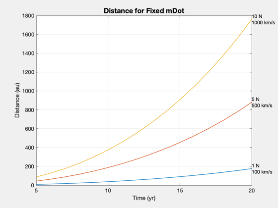
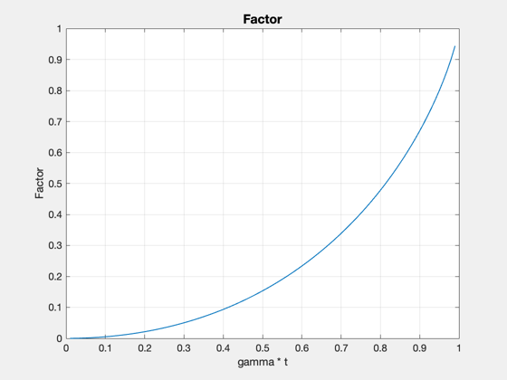
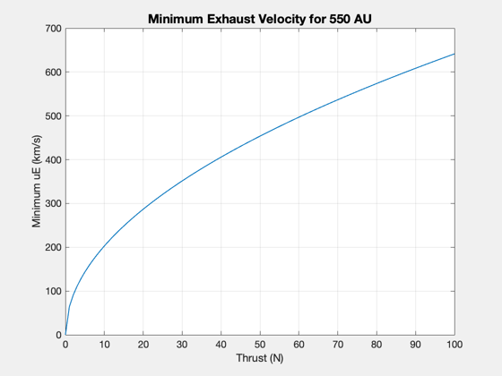

Thrust and uE tradeoffs with mass flow to 550 AU SGL distance
gamma is mDot/m0, around 1e-6 in this example.
%--------------------------------------------------------------------- % Copyright 2017 Princeton Satellite Systems, Inc. % All rights reserved. %--------------------------------------------------------------------- year = 86400*365.25; % Parameters m0 = 10000; mDot = 0.01*1e-3; % g/s uE = [100 500 1000]; % km/s t = [5:1:20]*year; % Calculations gamma = mDot/m0; tMax = 1/gamma; fprintf('tMax is %g yr\n',tMax/year) thrust = uE*1e3*mDot; d = []; for k = 1:length(uE) for j = 1:length(t) d(j,k) = uE(k)/gamma*( (1-gamma*t(j))*log(1-gamma*t(j)) + gamma*t(j) ); end end year = 86400*365.25; au = Constant('au'); Plot2D(t/year,d/au,'Time (yr)','Distance (au)','Distance for Fixed mDot') for k = 1:length(uE) text(t(end)/year,d(end,k)/au,sprintf('%g N\n%g km/s',thrust(k),uE(k))); end % Gamma is mDot/m0, so gamma*t is also mFuel/m0! fact = 0.01:0.01:0.99; func = (1-fact).*log(1-fact)+fact; Plot2D(fact,func,'gamma * t','Factor') thrust = linspace(0,100); % thrust (N) dF = 550*Constant('au'); % desired distance m0 = 20000; % kg uEMin = sqrt(dF*thrust*1e-3/m0); Plot2D(thrust,uEMin,'Thrust (N)','Minimum uE (km/s)','Minimum Exhaust Velocity for 550 AU') %-------------------------------------- % $Id: 1cdc4a8c5997b6162694178ea0dae538969fcc52 $
tMax is 31.6881 yr  